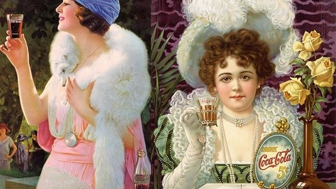
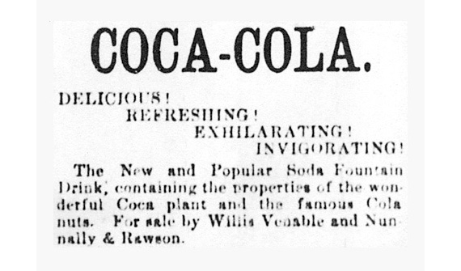
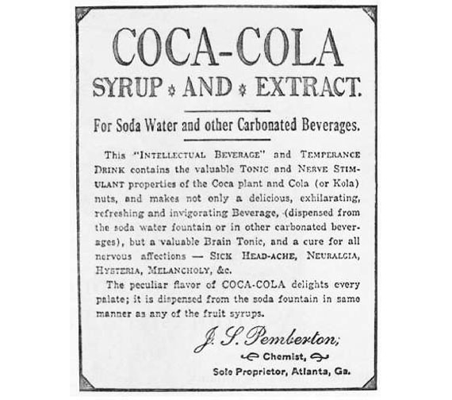
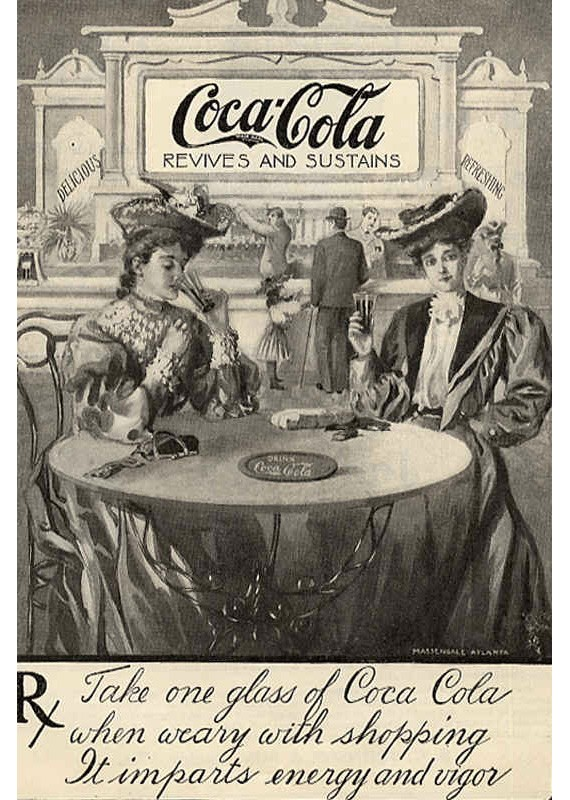
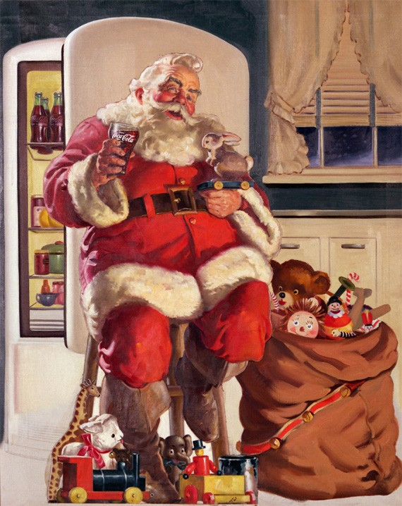
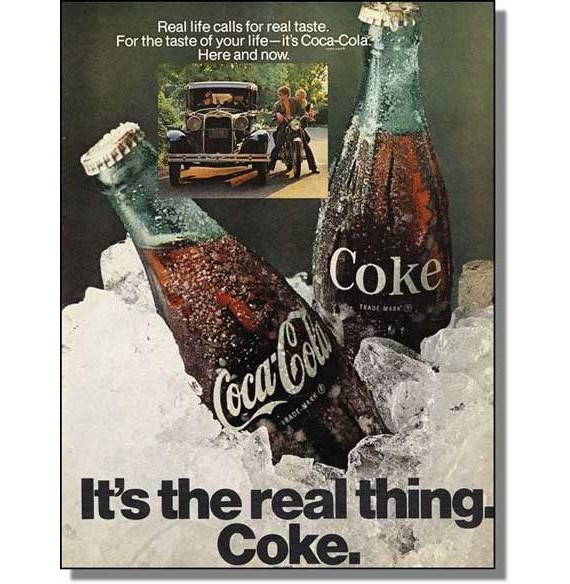
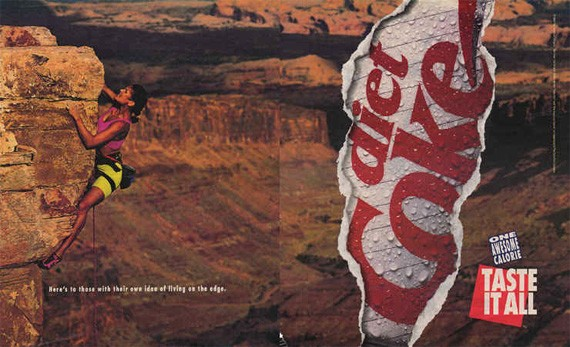
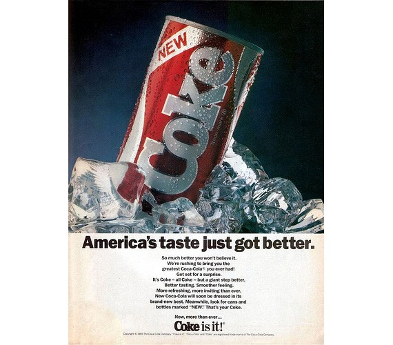
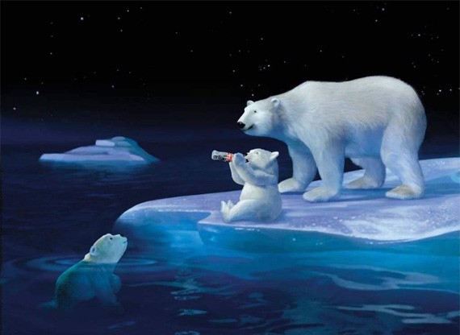
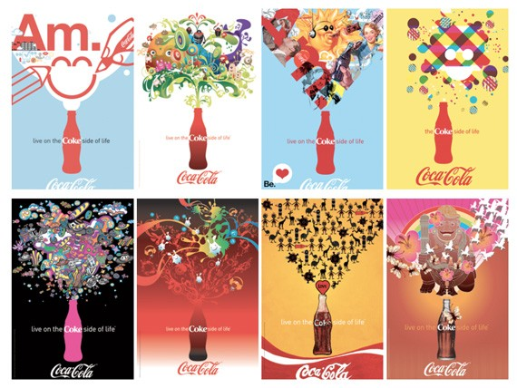

A publicidade da Coca-cola através dos tempos.
Coca-Cola é uma das marcas mais persistente na história. É uma das maiores marcas sobreviventes, e, portanto, considerada entre as empresas mais bem sucedidas. A razão, em parte disso, é a sua forte publicidade e marketing. A Coca-Cola sempre confiou em publicidade para promover e comercializar a sua marca, e é por isso que eles estão sempre no topo do seu jogo, por mais de um século! Coca-Cola, de fato, é muito ligada a cultura pop americana, e para não dizer o mundo inteiro.
Aqui encontramos uma coleção das melhores Publicidade da Coca-Cola a partir de seus primórdios em 1880.
1800
Foi a data memorável de 08 de maio de 1886, onde tudo começou. John Pemberton vendeu a bebida Coca-Cola pela primeira vez numa lanchonete na Farmácia de Jacob, Atlanta. Posteriormente, ele publicou o anúncio da Coca-Cola em primeiro lugar no Atlanta Journal.
Há pouca criatividade encontrada no primeiro anúncio, apenas algum texto. Nenhuma fonte estilosa, sem imagens, sem truques. O anúncio de jornal mostrou pela primeira vez o slogan da empresa (e, definitivamente, a última) vez: “Deliciosa! Refrescante! Emocionante! Revigorante!”
Em seguida, John Pemberton colocou o anúncio em um jornal mais longo e mais persuasivo. Ele ainda promoveu a bebida como uma bebida “deliciosa, estimulante, refrescante e revigorante”, mas acrescentou promete mais que a bebida é uma “bebida intelectual”, “bebida de temperança”, “tônico cerebral”, e ainda afirma ser capaz de curar: dor de cabeça, nevralgia, histeria, melancolia e muito mais.
Claro, essas afirmações não são plausíveis, mas cem anos antes não havia organizações de regulamentação da publicidade. Jornais durante esta época estavam cheios de publicidade fraudulenta por médicos charlatões e golpistas
Início de 1900
A publicidade da Coca-Cola durante o início de 1900, contou com mulheres jovens como suas porta-vozes. A primeira porta-voz da Coca-Cola era a modelo Hilda Clark.
1930 e 1960
É creditada a Coca-Cola, como criadora da imagem do Papai Noel moderno como um homem velho, alegre e gorducho em um terno vermelho e branco. A Coca-Cola inventou o Papai vermelho-e-branco alegre durante a década de 1930, a ilustração feita por Haddon Sundblom. Antes, mulheres bonitas jovens foram usadas para endossar a marca Coca-Cola.
A imagem do Papai Noel Coca-Cola apareceu através de suas propagandas por três décadas. Por causa da publicidade da Coca-Cola, então, o Papai Noel é o que todos conhecemos e amamos, veio a existir.
Final da década de 1960
Até a década de 1970 a maioria das pessoas gostavam de tomar Coca-Cola em sorveterias ou em máquina no local. Esses locais eram lugares para se reunir com outras pessoas. Como você pode ver até a publicidade da década de 1960 a Coca-Cola mostra pessoas segurando a sua bebida em um copo, em vez da garrafa icônica.
Em 1969, eles lançaram novo slogan publicitário “É a coisa real.” A campanha agora centra-se na garrafa de Coca-Cola em si.
1960-1980
Foi durante esta época que a Coca-Cola se tornou global. A empresa tinha se espalhado para 163 países do mundo. Ano após ano, conquistando novos mercados, como Macau, Turquia, Paraguai, Filipinas, para citar alguns. Não só isso, a Coca-Cola se expandiu em diversos sabores como Fanta e Sprite.
Com a expansão rápida, a Coca-Cola entrou com uma campanha publicitária maciça. Coca-Cola sempre acreditou na propaganda. O apelo internacional da Coca-Cola foi compartilhado em sua publicidade com o slogan: “Eu gostaria de comprar uma Coca-Cola do Mundo”.
1980
Esta década marcou o nascimento da Coca-Cola diet.
Esta década também marcou a introdução da New Coke. Foi um esforço desesperado depois que a Coca-Cola percebeu um declínio drástico nas vendas e o aumento da concorrência da Pepsi. Os executivos da empresa responderam mudando a fórmula da Coca-Cola. Em testes, as pessoas foram favoráveis ao novo sabor. Mas, na realidade, as pessoas odiaram. As pessoas perderam o sabor clássico da Coca-Cola, e foi um escândalo, milhares de chamadas telefônicas, reclamações e constante cartas furiosas todos os dias.
New Coke foi considerado um dos maiores erros da empresa na sua história. O problema não era o gosto, mas talvez porque ele quebrou a tradição. Assim, a Coca-Cola admitiu seu erro e anunciou que voltaria a sua receita antiga novamente.
1993
Além do Papai Noel, um dos símbolos mais marcantes da Coca-Cola, é o Urso Polar animado. Ele veio através da campanha publicitária da Northern Lights. O primeiro anúncio apresentado ursos polares assistindo a um “filme”, um jogo de aurora boreal enquanto bebe Coca-Cola.
2000 – Em diante
A campanha publicitária foi lançada em 2006 (Coke Side of Life) e o tema central é em torno de pessoas bebendo Coca-Cola sentindo-se felizes e positivas. Você bebe Coca-Cola, você se sente bem. A campanha tem imagens otimista e positiva, e capta a essência da vida. Estimulando as pessoas a amar a espontaneidade e de ver o mundo em cores.
